# 基本套路
题目中一般会出现” 确定评价指标、形成评价体系 “等关键子眼。首先要回答以下三个问题：
1 |
|
推荐的搜索平台：
虫部落 - 快搜、知网、维普、百度学术、万方
判断矩阵：
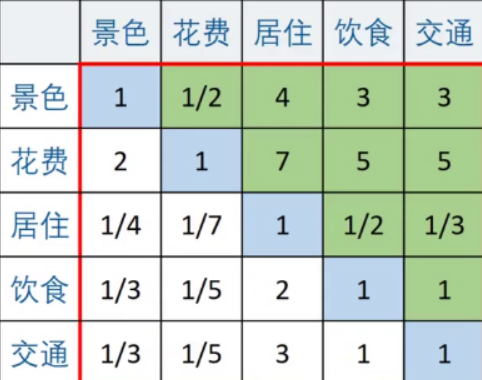
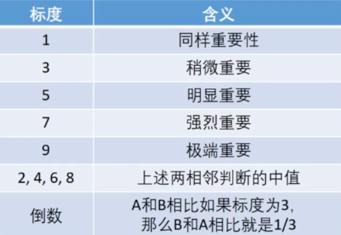
若矩阵中每个元素 <p>a_{ij} x a_{ji} = 1，则我们称该矩阵为正互反矩阵。在层次分析法中，我们构造的判断矩阵均是正互反矩阵。若正互反矩阵满足 a_{ij} x a_{jk} = a_{ik} ，则我们称其为一致矩阵。
引理：n 阶正互反矩阵 A 为一致矩阵时当且仅当最大特征值.
判断矩阵越不一致时，最大特征值与 n 相差就越大。
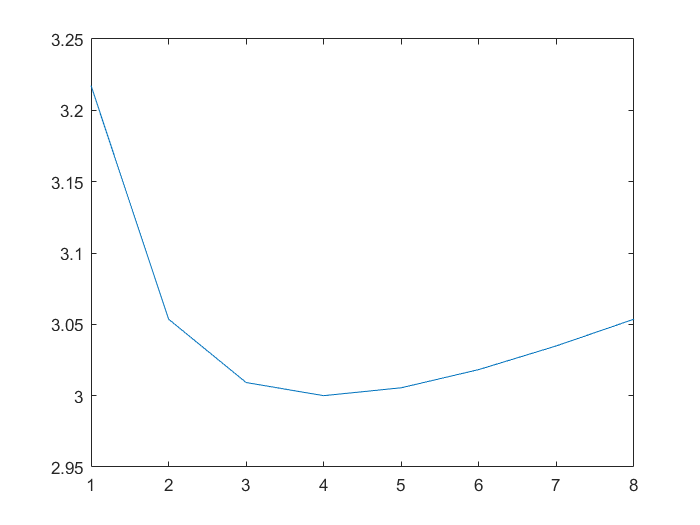
所以当我们构造出一个判断矩阵时，就必须对它进行一致性检验。
# 一致性检验
①：计算一致性指标 CI
②：查找对应的平均随机一致性指标 RI
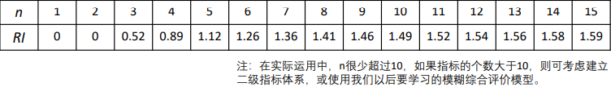
③：计算一致性比例 CR
如果 CR<0.1，则可认为判断矩阵的一致性可以接受；否则需要对判断矩阵进行修正，往一致矩阵上调整，一致矩阵各行成倍数关系。
# 一致性矩阵怎么计算权重？
| 景色 | 苏杭 | 北戴河 | 桂林 |
|---|---|---|---|
| 苏杭 | 1 | 2 | 4 |
| 北戴河 | 1/2 | 1 | 1/2 |
| 桂林 | 1/4 | 1/2 | 1 |
对景色而言：苏杭的重要性如果是 1，那么北戴河的重要性就是 1/2，桂林的重要性就是 1/4. 注意，权重一定要进行归一化处理：
苏杭 = 1 /（1+0.5+0.25） 北戴河 = 0.5 /（1+0.5+0.25） 桂林 = 0.25 /（1+0.5+0.25）
# 判断矩阵计算权重
| 景色 | 苏杭 | 北戴河 | 桂林 |
|---|---|---|---|
| 苏杭 | 1 | 2 | 5 |
| 北戴河 | 1/2 | 1 | 1/2 |
| 桂林 | 1/5 | 1/2 | 1 |
仅使用第一列的数据，计算出来的权重： 苏杭 = 1 /（1+0.5+0.2）= 0.5882 北戴河 = 0.5 /（1+0.5+0.2）= 0.2941 桂林 = 0.2 /（1+0.5+0.2）= 0.1177；使用第二列的数据，计算出来的权重： 苏杭 = 2 /（2+1+0.5）= 0.5714 北戴河 = 1 /（2+1+0.5）= 0.2857 桂林 = 0.5 /（2+1+0.5）= 0.1429； 使用第三列的数据，计算出来的权重： 苏杭 = 5 /（5+2+1）= 0.625 北戴河 = 2 /（5+2+1）= 0.25 桂林 = 1 /（5+2+1）= 0.125；综合上述三列，我们求平均权重： 苏杭 = (0.5882+0.5714+0.625)/3=0.5949 北戴河 = (0.2941+0.2857+0.25)/3=0.2766 桂林 = (0.1177+0.1429+0.125)/3=0.1285。
方法 1：算术平均法求权重，如上计算过程。
方法 2：几何平均法求权重，求法如下：
①：将 A 的元素按照行相乘得到一个新的列向量 ②：将新的向量的每个分量开 n 次方 ③：对该列向量进行归一化即可得到权重向量。
方法 3：特征值法求权重，求法如下：
前提：加入构建的判断矩阵一致性可以接受，那么我们可以仿照一致矩阵权重的求法。
①：求出矩阵 A 的最大特征值以及其对应的特征向量
②：对求出的特征向量进行归一化即可得到我们的权重
我们一般使用第三种方法求权重。
# 总的计算过程：
一：分析系统中各因素之间的关系，建立系统的递阶层次结构.
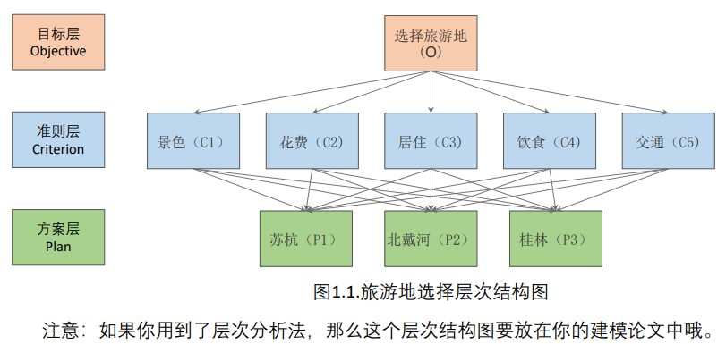
二：计算指标之间的权重
构建指标之间的判断矩阵，判断矩阵的一致性，最后计算权重，下面贴个图～
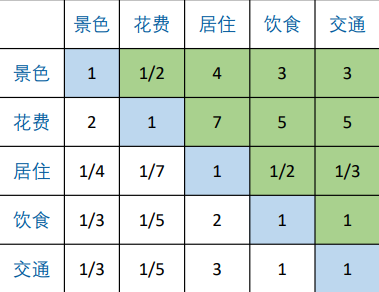
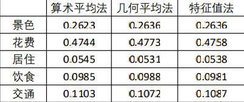
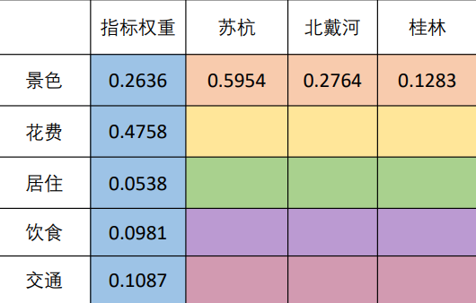
三：计算一个指标内的不同变量间的权重
构建变量之间的判断矩阵，判断矩阵的一致性，最后计算权重，下面贴个图～
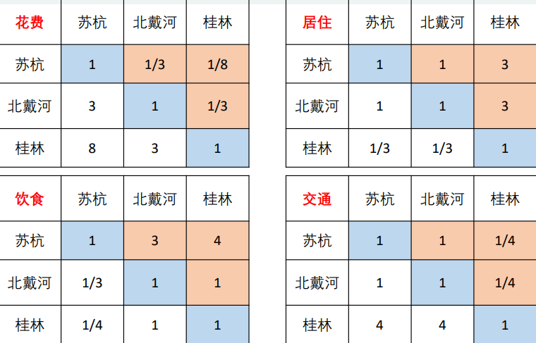
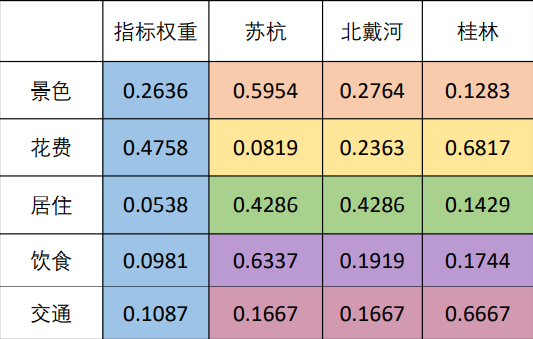
四：归一化，方案间比较，得出结论
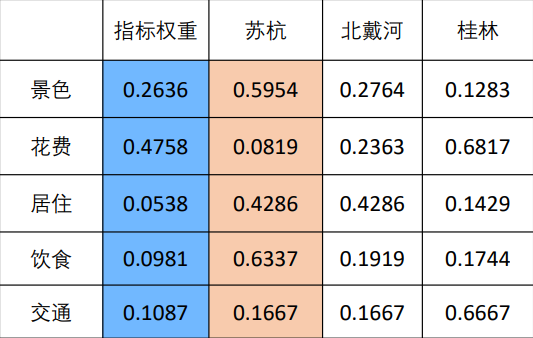
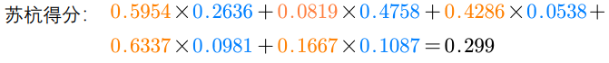
# 局限性
评价的决策层不能太多，太多的话 n 会很大，判断矩阵和一致矩阵差异可能会很大。平均随机一致性指标 RI 的表格中 n 最多是 15。